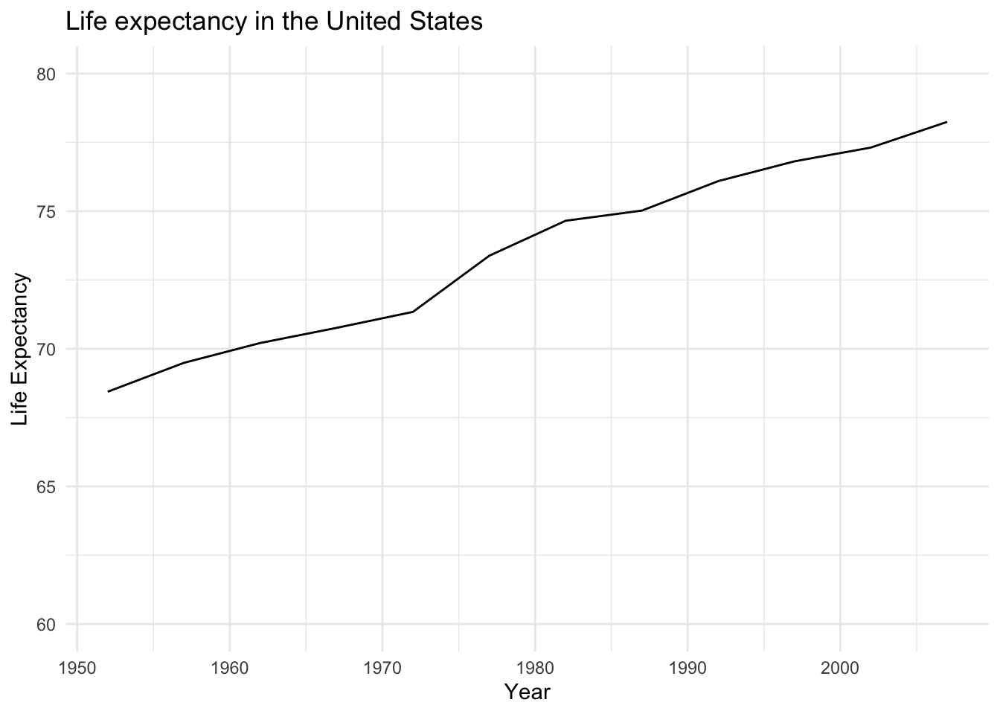
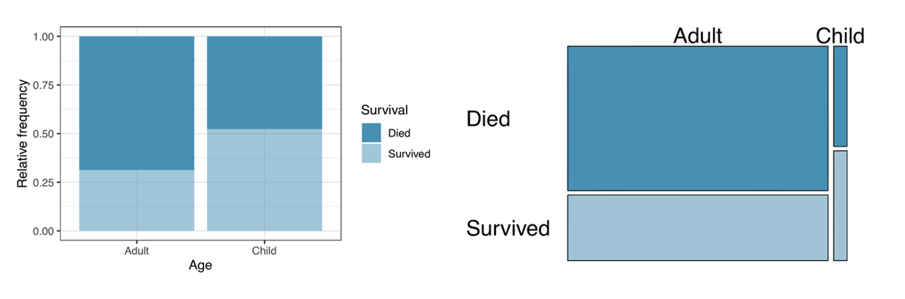
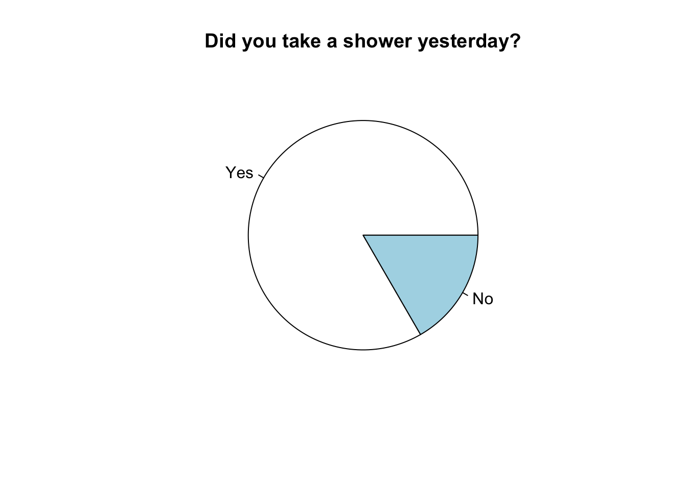
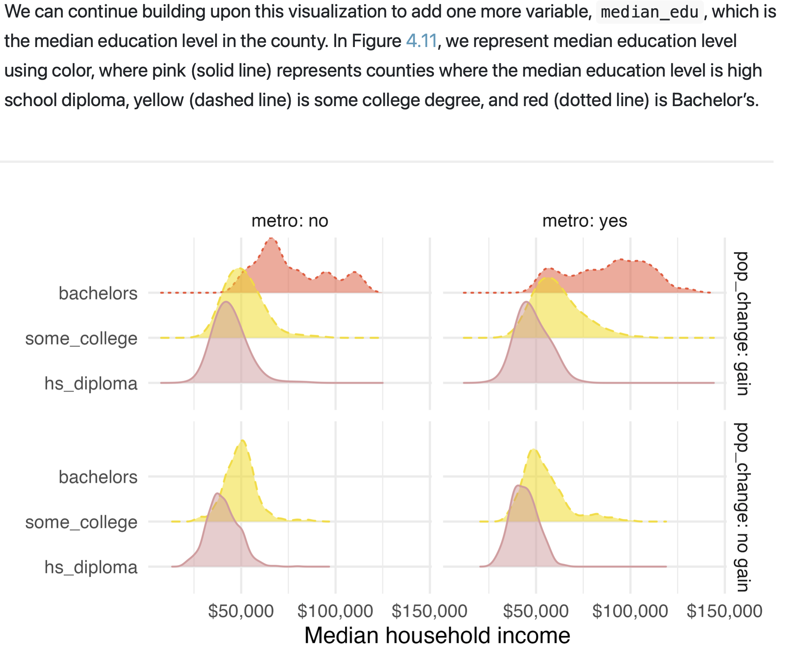

Student Questions - Chapters 3 & 4
Having a hard time understanding/curious to know more about Mosaic plots.
Mosaic plots are the same as standardized bar plots (used to display two categorical variables), but they provide us a bit more context by also utilizing the width of the bars. Wider bars mean that more respondents in the dataset have that characteristic/fit into that category, compared to other categories.
Recall the Titanic example from class. Standardized bar plot (left) and mosaic plot (right) both show us the proportion of adults who survived vs died and the proportion of children who survived vs died. But the mosaic plot provides the additional context that there were many more adults than children on board (adult bar is much wider than children bar)

Do plots have appropriate uses, but does that sometimes vary depending on what information needs to be emphasized?
Yep! Identifying the number and type(s) of variables you are trying to visualize (e.g. one numeric variable, or two categorical variables) will help you narrow in on the list of appropriate graphs you have available to you. Then the exact choice of “best” graph will depend on the question you are trying to answer, or the point you are trying to make. There is also room for subjective preferences - choosing the “best” visualization is both an art and a science :)
Table below provides a summary of the visualization types we’ve seen and when they should be used
From Data to Viz also provides an awesome resource for choosing a visualization (including ones fancier than what’s covered in the textbook), and even has R code for how to produce them in RStudio!
Visualization type Number of variables Type of variables Bar plot (simple) 1 categorical Bar plot (stacked/standardized) 2 categorical Boxplot (simple) 1 numeric Contingency table 2 categorical Dot plot 1 numeric Histogram 1 numeric Mosaic plot 2 categorical Pie charts 1 categorical Scatterplot 2 numeric Side-by-side boxplot 2 1 categorical, 1 numeric Waffle charts 1 categorical
Review of categorical/numerical variables would be helpful
Think: How would one observational unit (e.g. person) answer this question? Would the answer be a number or a word/phrase?
If the answer would be a word/phrase, it’s definitely categorical
If the answer would be a number, ask some follow-up questions: would it make sense to add, subtract, or take an average of these numbers? If yes, it’s numeric. If not, it’s likely categorical.
Example 1: Phone number. Even though it’s made up of numbers, it wouldn’t make sense to add them up, so it’s actually categorical.
Example 2: How many Potter books you’ve read. This is a number, and it would made sense to compute the average number of books read for a sample of people. This is numeric.
Example 3: In our Nelson Mandela experiment, the anchor was 16 or 160. We could take the average of those two numbers, but it wouldn’t provide us with any meaningful information. Those two numbers are stand-ins for categories - they’re telling us which version of the survey the responded received.
Are we going to be making these graphs or do we just learn how to read them? Because the waffle graph seems a bit complicated for me to understand and it might be even harder when I have to create one on my own.
- Yes! You’ll learn how to create many visualizations using R, but you won’t ever have to create them by hand. In the lab assignments, you’ll create many of the basic visualizations (e.g. bar plots, histograms, scatterplots). If you like this stuff and want to explore more, you should consider adding a Data Science minor - the next course after this one (MATH 250 - Data Analysis) and MATH 451 - Data Visualization will help take your data viz skills even further :)
Are some charts harder to put together than others, if there is why?
- Some visualizations are more involved than others, simply because they present more information. However, the R code you’ll be learning for data visualization uses something called the “grammar of graphics”. Once you learn the basic grammar/syntax, it is very flexible and allows you to create lots of types of visualization. Also see comment above about other classes you can take to build on the skills introduced in MATH 130 :)
How do you know what the x-axis is vs. y-axis?
The x-axis is the horizontal axis, and the y-axis is the vertical axis. We put the explanatory variable on the x-axis and the response variable on the y-axis. In the example below, Year is the x-axis and is the explanatory variable, and Life Expectancy is on the y-axis and is the response variable.
What are some examples of when we would use a waffle chart rather than a pie chart?
- We should almost never use a pie chart :) Typically, a waffle chart or a bar plot will be a better alternative to a pie chart. All are visualizations to display one categorical variable. Waffle charts are especially good to help people see things like “13 out of 100 people think/do _____”
If waffle charts convey a better sense of proportion size in a visual way, then why do so many researchers use pie charts? Are there more benefits in data visualization in a pie chart that a waffle chart cannot present?
Researchers tend to get stuck in ruts with the norms in their field, and don’t necessarily choose the best/most innovative ways to display data. I consider myself to a researcher / active in the research community (I actually do data visualization research!), and I can confirm that researchers as a whole aren’t great at communicating results effectively or adopting data visualization best practices :) People working in (data) journalism or marketing are often much better at keeping up with best practices, and innovating themselves, because their business model depends more on effective communication!
From a visual cognition perspective, waffle charts are almost always going to be more effective than pie charts. That’s not to say pie charts are always ineffective, however. For a simple 2-category variable (e.g. Yes, No), they can be fine.

I would like to see more examples of comparing numerical data
- Chapter 5 will be all about numerical data :)
What is median education? (in the example below from Chapter 4)
Likely level of education was converted to a numeric scale (e.g. Less than high school = 1, high school degree = 2, …. Doctoral degree = 7) for all respondents in the county. Then they took the median of those numbers to represent the “typical” education level for that county.

Is there a limit to the number of variables that can be in a bar graph?
A simple bar graph displays one categorical variable
A stacked or standardized bar graph displays two categorical variables
I can imagine some more complicated combinations, such as a “faceted bar graph” where you make one bar graph per category of a third variable, but the previous two bullet points are the most common
Is there a limit to how many variables can be in a data set?
Nope! Some real-world datasets have millions of variables! Gene-expression data in biology is one example where this is common. The larger your dataset though, the more computational power it takes to handle! That is, it takes the computer a longer time to process that much information. There are whole areas of research about how to compress data and make it more manageable for the computer, without losing too much of the information/insight stored in it.
You might be interested in exploring topics such as Big Data, bioinformatics, or machine learning
Are we able to make contingency tables in RStudio Cloud?
Yep! We won’t focus on that too much in this class, but you can take the next class MATH 250 - Data Analysis to explore more :)
Here’s an example of a contingency table for a political party affiliation by religious identity from the General Social Survey
relig <- gss_cat %>%
filter(relig %in% c("Christian", "Jewish", "Moslem/islam")) %>%
mutate(relig2 = droplevels(relig))
table(relig$partyid, relig$relig2)
Christian Moslem/islam Jewish
No answer 5 5 0
Don't know 0 0 0
Other party 22 1 9
Strong republican 54 2 23
Not str republican 106 3 38
Ind,near rep 71 7 17
Independent 149 21 37
Ind,near dem 63 19 55
Not str democrat 122 28 83
Strong democrat 97 18 126How do you know when a sample can be generalized to “all people”?
We start by defining our population of interest, which will make explicit who we mean by “all people”. For example, our population of interest might be all LA County residents.
Then, we obtain a list of all people in our population. Often this is tricky in real life, and we sometimes have to settle for a slightly different population. For example, maybe we only have a list of people who are registered to vote in LA County. Or, people who have a residential address in LA County. We have to adjust our definition of “population” to reflect the list of people we actually have access to.
Then, we randomly select people from our list, say 500 of them.
The results we obtain from a survey/study on these 500 people will be generalizable to the whole population (e.g. registered voters in LA County) because they were randomly sampled from that population.
Take home message: random sampling is the statistical mechanism that allows us to generalize results from a sample to a population. And we must be explicit about who our “population” is (what list of people did we randomly select from?).
What is an R Lab because I did not understand what it meant?
- R is the name of the statistical software we’re using in this course. You access it via RStudio Cloud. The assignments that we do in RStudio Cloud are called “labs” (instead of “homework” for example). You already completed Lab 00. We will do Lab 01 next week.
How often are categorical charts used in your average research? Do a lot of data sets contain categorical data about the proportion of different categories in the table?
Categorical data (and their visualizations) are very common! Particularly in the social sciences that are dealing with people and their social characteristics (e.g. gender, race, socio-economic status) on a regular basis.
Almost all fields will encounter binary data of some form on a regular basis. E.g. characteristic is present yes/no, success/failure, disease/no disease, survival/death, debit/credit, miss/make, etc.
Some other common examples of categorical data:
Businesses look at performance by month or by quarter (Q1, Q2, Q3, Q4)
Schools look at performance by semester (Fall, Spring, Summer)
Marketing firms look at click behavior (e.g. clicked ad/didn’t click ad) and buying habits (e.g. bought item, placed in cart)
Politics looks at data by county, or census tract, or congressional district
Etc.